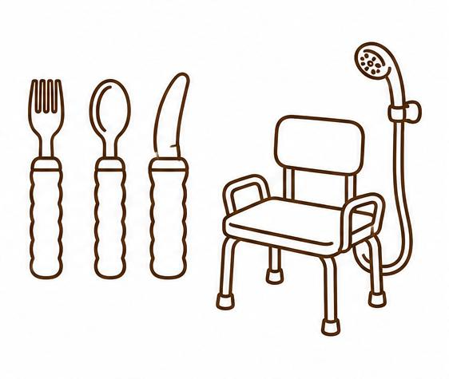
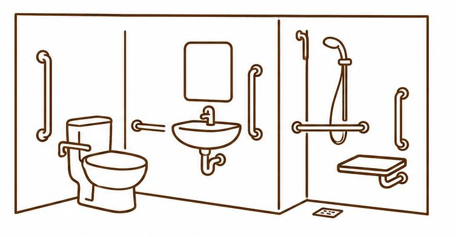
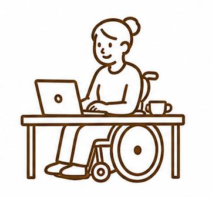
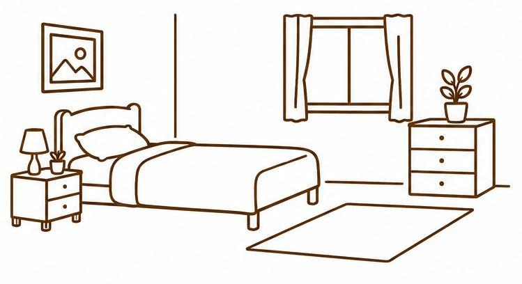
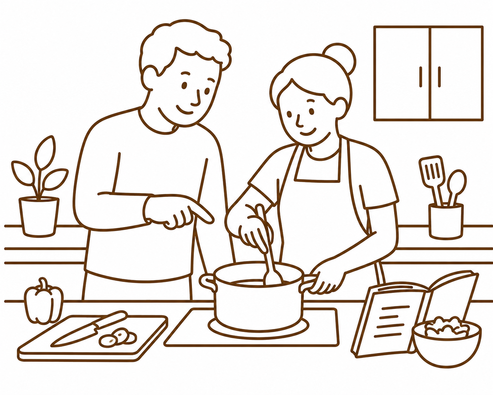

Assistive Technology & Equipment Prescription
Assessment and recommendation of equipment and assistive technology to support safety, independence, comfort, and participation in everyday life. This may include mobility aids, seating, sensory supports, bathroom equipment, and daily living aids.

Home Modifications
Home assessments and recommendations for major and minor modifications to improve accessibility and safety within the home. This can include installation of grab rails, lever door handles, level-access showers, wheelchair ramps and other environmental changes to support independence and reduce falls risk.

Paediatric Occupational Therapy
Ongoing therapy for school-aged children and adolescents to support emotional regulation, attention, sensory processing, motor skills, independence, social participation, and engagement in everyday activities. Therapy is tailored to each child’s strengths, interests, and goals.
Functional Capacity Assessments
Comprehensive assessments to better understand a person’s daily functioning, support needs, and goals across home, school, work, and community environments. Reports can assist with accessing supports and planning for future needs.

Supported Independent Living (SIL)
Providing clinical assessments and reports to support applications for Supported Independent Living (SIL). This includes evaluating an individual's functional needs, exploring housing options, and making recommendations to ensure a home environment that supports independence, safety, and long-term wellbeing.

Capacity Building & Ongoing Therapy
Individualised therapy focused on building practical life skills, confidence, independence, and participation in meaningful activities across everyday environments.
